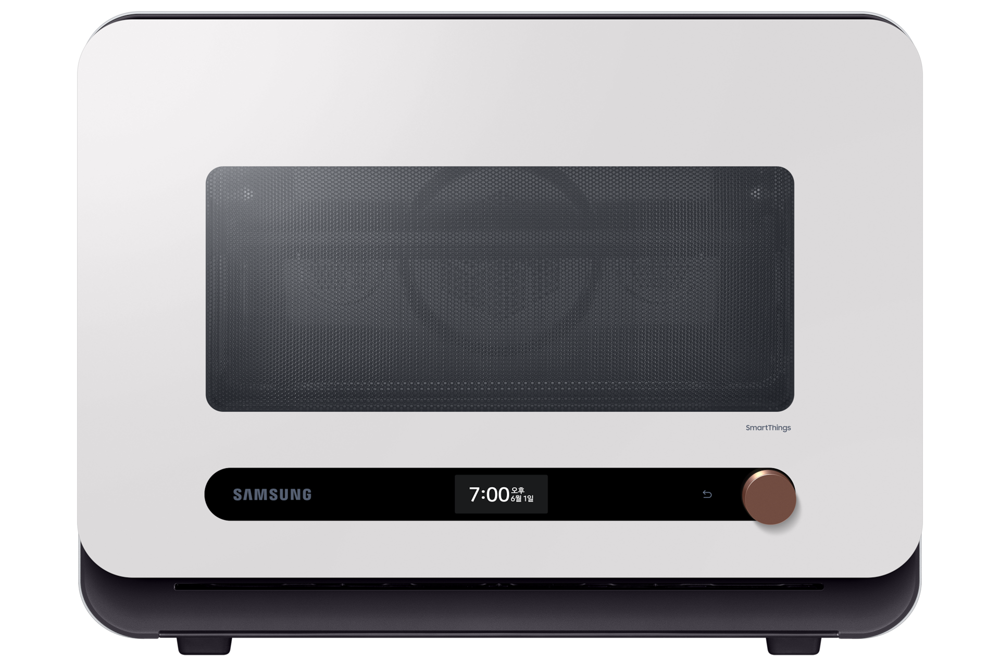
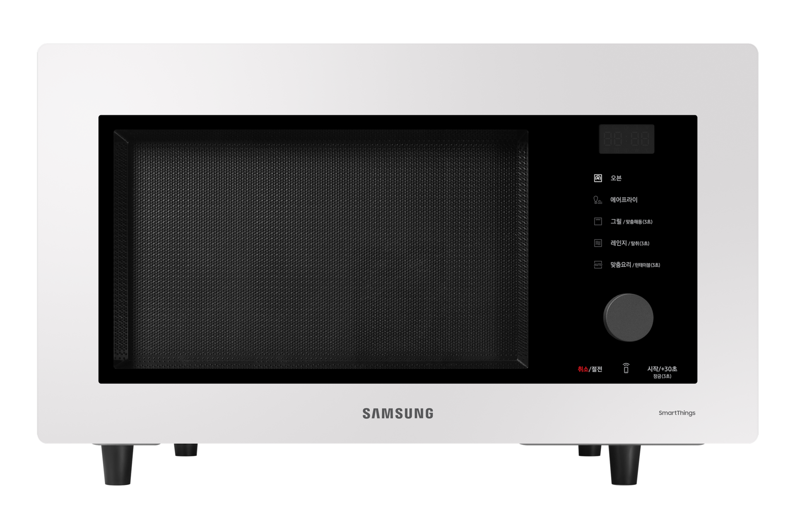
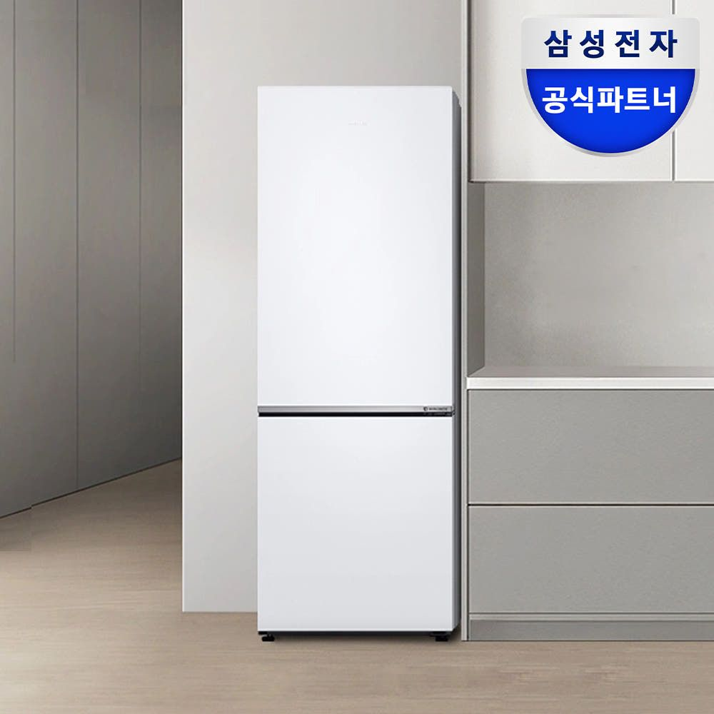
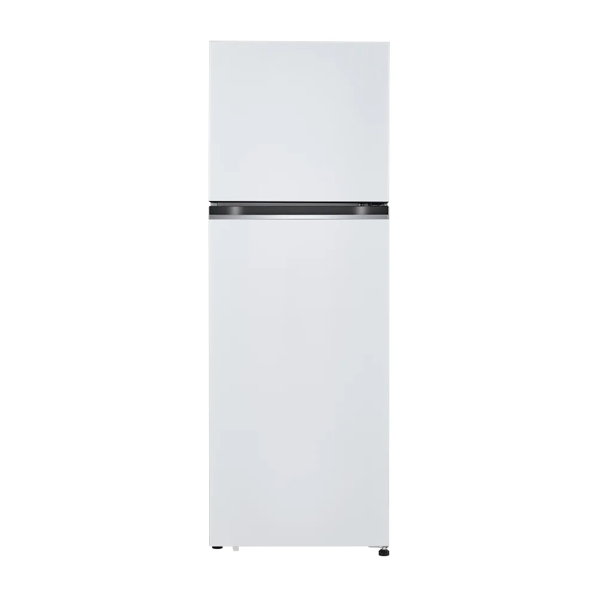
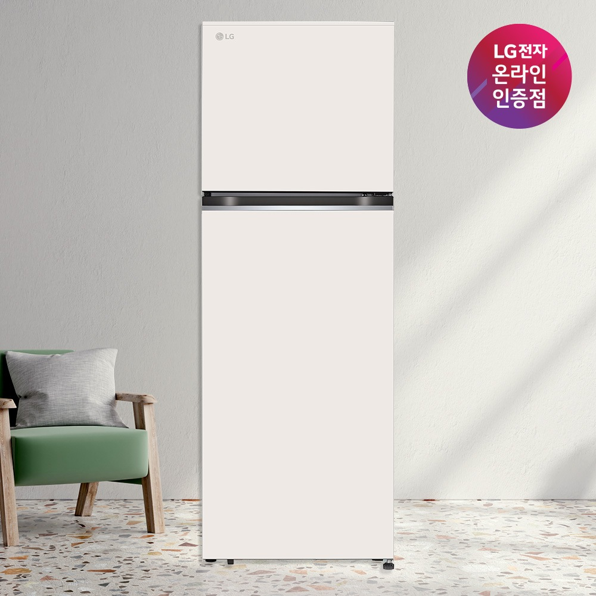
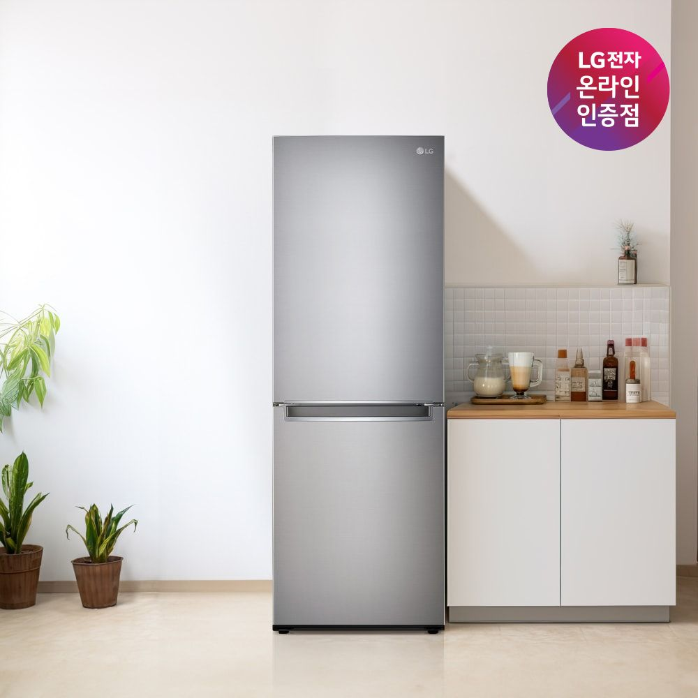

냉장고 칸 · 안쪽 실측
100 × 189cm폭 × 높이 · 깊이는 미측정SKYTOWER 36B · MEASURED FIT · 2026.10.29
실측으로 다시 보는
주방 가전 자리.
A·B·C·D·E 모든 안에 같은 실측 구조와 가전 칸을 적용했습니다.
전자레인지 칸은 안쪽 폭53×높이33cm. 삼성 큐커22L·32L 모두 이 칸에는 설치할 수 없어요. 냉장고는 새로 확인한 폭100×높이189cm를 기준으로 후보를 비교하되, 깊이와 방열·문 열림 공간까지 확인해야 합니다.
전자레인지 칸 · 안쪽 실측
53 × 33cm큐커 두 모델 모두 별도 자리 필요기존 E안 구매 계획
4,963,700원유지 · 새 냉장고와 큐커 받침 가구 별도확인된 실측과 아직 남은 치수
단위는cm입니다. 가전 칸은 제품 크기가 아닌 비어 있는 칸의 안쪽 폭·높이로 확인했어요. 손으로 작성한 원본 도면 대신 숫자만 정리했습니다.
| 위치 | 확인한 값 | 확인 범위 |
|---|---|---|
| 냉장고 칸 | 폭100 × 높이189 | 사용자 확인 안쪽 빈 공간. 깊이·콘센트 돌출·문 열림 공간 미측정. |
| 전자레인지 칸 | 폭53 × 높이33 | 사용자 확인 안쪽 빈 공간. 깊이는 미측정이며, 큐커 설치 판단은 이미 폭·높이에서 불가. |
| 세탁기 칸 | 폭60 × 높이83 | 사용자 확인 안쪽 빈 공간. 제품·호스·배수·문 열림까지 들어갈 수 있는지는 별도 검토. |
| 침실 · 위쪽 그림 | 상변250 · 왼쪽338 문이 있는 하변282 | 사용자 확인 282cm는 붙박이장 앞면부터 창 쪽 모서리까지입니다. 붙박이장 뒤벽부터 잰 전체 길이가 아니며, 단차·사선 각도까지 확정된 것은 아닙니다. |
| 거실 · 아래쪽 그림 | 상변370 · 하변384 | 사용자 확인 가운데 적힌340은 현재 판독 추정값으로 별도 취급. |
| 천장·요리 구간 | 천장228 · 요리 구간200 | 도면 판독 숫자는 읽히지만 치수의 기준점·방향을 사용자에게 별도로 확정받지 않은 값. |
보일러실 쪽은250cm 벽 끝에서114cm로 표시된 벽까지의 가로 길이가 미측정입니다. 거실340cm의 의미와 창 개구부의 실제 폭·위치도 추가 확인 대상입니다.
실측 길이를 반영해도, 방 모양 전체가 실측으로 확정된 것은 아니에요.
보일러실 쪽 미측정 가로 단차는 약122.7cm로 계산한 임시값입니다. 기존 모델의 보일러실 뒤벽 기울기를 유지한다는 가정이 포함되어 있어요. 사선 창벽은 평면 수평축 기준 거실 약38.6도·침실 약35.3도로 계산되지만, 현장에서 잰 각도가 아니며 두 창벽의 평행 여부도 아직 미확정입니다.
외벽 두께18cm, 공유벽·보일러실 벽 두께12cm, 붙박이장 깊이44cm는 기존 모델 값을 유지한 부분입니다. 전체 위치를 맞추는 복도206.5cm 기준도 도면 판독에 따른 임시 기준이므로, 이번에 직접 확인한 실측값과 구분해서 봐 주세요.
큐커는 기존 칸에 넣지 않는 구성
22L는 높이가5.53cm 초과하고, 32L는 높이 여유가0cm예요.
32L 본체의 숫자가 칸 높이와 같아도 설치 가능한 것은 아닙니다. 두 모델 모두 위20cm, 양옆 각각10cm의 방열 공간을 확보해야 해요.

본체 높이부터 초과큐커 멀티22L
MO22A7797CW2 · 글램 화이트 · 프리스탠딩
닫힌 본체 · 폭×높이×깊이50 × 38.53 × 41.58cm
실측 칸 높이33cm와 비교5.53cm 초과
폭은 합계3cm 남지만 높이가 맞지 않아요. 깊이를 추가로 재더라도 이 칸에 설치할 수 없다는 결론은 같습니다.
본체 무게23.3kg · 최대 복합 소비전력2,550W. 이 모델의 현재 판매가·재고는 이번 실측 검토에서 확인하지 않았어요.

방열 공간 부족큐커 오븐32L
MC32B7388CE · 글램 화이트 · 프리스탠딩
닫힌 본체 · 폭×높이×깊이52.3 × 33 × 51.5cm
실측 칸 높이33cm와 비교위쪽 여유0cm
정중앙에 놓아도 양옆은 각각0.35cm뿐이에요. 깊이와 삽입 오차도 미확인이라 본체가 실제로 들어간다고 확정할 수 없고, 방열 조건은 충족하지 못합니다.
본체 무게19kg · 최대 복합 소비전력2,500W. 기존 견적의399,000원은 이 모델의 계획비로, 현재 구매 가능 가격을 뜻하지 않습니다.
별도 받침 가구를 놓는다면
통풍이 열린 내열 상판을 검토해요. 아래 가구 크기는 본체와 설명서의 간격을 더해 잡은 배치 검토용 제안이며, 아직 제품·위치·가격을 정하지 않았습니다.
| 모델 | 상판 제안 · 폭×깊이 | 상판 높이 | 본체 위 여유 |
|---|---|---|---|
| 22L | 80 × 60cm | 바닥에서85cm 이상 | 20cm 이상 |
| 32L | 80 × 70cm | 바닥에서85cm 이상 | 20cm 이상 |
뒤에 콘센트가 있으면15cm를 띄워야 하므로 본체를 포함한 깊이는22L 약56.58cm,32L 약66.5cm가 됩니다. 뒤 콘센트가 없는 경우도10cm 여유가 필요해요. 이 치수는 밀폐장을 제작해도 된다는 뜻이 아니며, 문을 연 상태와 앞쪽 작업 공간은 별도로 남겨야 합니다.
가구 크기 외에 전원과 상판도 맞아야 해요.
AC220V·60Hz, 정격15A 이상 접지 콘센트를 큐커 단독으로 사용합니다. 멀티탭·임의 연장선은 사용하지 않고, 무게와 음식·용기를 안정적으로 지지하는 내열 받침이 필요해요. 기존 높이74cm 식탁은 설명서의85cm 이상 조건에 맞지 않습니다.
기존 조리대는 실제 남는 폭·깊이·상부장 간격과 콘센트를 재기 전까지 대체 자리로 확정하지 않았습니다. 삼성전자서비스 설치 안내 ↗
냉장고는100×189cm 안쪽 공간부터
새 냉장고는 기존 E안 총액과 별도로 비교합니다. 본체 크기가 맞는 후보도 칸 깊이·방열 공간·문 열림과 기존 냉장고 처리 조건을 확인한 뒤 선택해야 해요.
우선 비교는 삼성 화이트306L, 가격을 줄이면 LG 화이트335L.
삼성은 자주 쓰는 냉장실이 위쪽에 있고 후보 중 깊이가 가장 작아요. LG 화이트는 용량이 더 크고 가격이 낮지만, 본체와 뒤쪽 여유를 합치면 깊이가81cm라 돌출·문 열림을 먼저 봐야 합니다.

우선 비교 · 화이트·얕은 깊이삼성 RB30F4051WW · 306L
스노우화이트 · 상냉장216L / 하냉동90L
일반형2도어 · 패널을 교체하는 BESPOKE 제품은 아닙니다.
787,200원
오늘의집 옵션가 · 기본배송 무료
본체 · 폭×높이×깊이59.5 × 170 × 66.3cm
뒷벽 → 닫힌 문 앞면약71.3cm부터
설명서상 좌우·뒤 각각5cm 이상을 권장해요. 칸 위쪽에는19cm가 남지만, 상부 간격의 숫자는 해당 설명서에 명시되어 있지 않아 설치 확인이 필요합니다.
문을115도 열면 폭83.9×깊이121cm. 이 값은 제품 자체의 사용 외곽치수이며 뒤쪽 환기·플러그·주변 가구 간격은 별도예요.
1등급 · 오늘의집 해당 판매페이지 평점4.9 / 후기71개. 후기 수는 사용 경험의 참고이며 설치 적합성의 근거는 아닙니다.

가격을 줄이는 화이트 대안LG B332W34 · 335L
화이트 메탈 · 상냉동79L / 하냉장256L
630,000원
LG 공식몰 회원할인가 · 일반 배송·설치 무료
본체 · 폭×높이×깊이60 × 172 × 71cm
뒷벽 → 닫힌 문 앞면약81cm부터
위·좌우·뒤10cm 간격 기준, 폭80×높이182cm가 필요해요. 실측100×189cm는 폭·높이 조건에 여유가 있지만 깊이는 아직 확인하지 못했어요.
문을 연 외곽 폭103.1cm가 칸 폭100cm보다 커요. 문까지 깊숙이 넣지 않고 장 측판 앞에서 열릴 수 있는지 확인해야 합니다.
4등급 · 같은 용량의 베이지 후보보다119,180원 낮아요. 특수 현장 비용·지역별 설치 가능일은 별도 확인합니다.

따뜻한 베이지 색상LG D332MBE34 · 335L
오브제컬렉션 네이처(메탈) 베이지
상냉동79L / 하냉장256L · 폐가전 수거 안 함 옵션
749,180원
오늘의집 옵션가 · 기본배송 무료
본체 · 폭×높이×깊이60 × 172 × 71cm
뒷벽 → 닫힌 문 앞면약81cm부터
우드와 크림 조명에 부드럽게 이어지는 색상이에요. 위·좌우·뒤10cm 기준의 폭·높이 조건은 맞지만, LG 화이트 후보와 같은 깊이·문 열림 조건을 확인해야 해요.
문 개방 외곽 폭103.1cm. 측판 앞쪽으로 문이 나오도록 설치해야 할 수 있습니다. 오늘의집은 판매 표시가 있지만 LG 공식몰은 일시품절이라 실제 출고 배정을 확인해 주세요.
4등급 · 오늘의집 해당 판매페이지 평점4.8 / 후기392개. 표기한 가격은 추가 카드·쿠폰 할인을 적용하지 않은 옵션가입니다.

SUS 선반과 이어지는 실버LG M301S31 · 300L
모던엣지 샤인 / 실버 메탈 · 상냉장·하냉동
710,000원
LG 공식몰 회원할인가 · 일반 배송·설치 무료
본체 · 폭×높이×깊이59.5 × 172 × 67.7cm
뒷벽 → 닫힌 문 앞면약77.7cm부터
위·좌우·뒤10cm 기준, 폭79.5×높이182cm가 필요해요. 베이지335L보다 본체 깊이가3.3cm 작고, 무지 SUS와 금속 색을 연결할 수 있는 대안이에요.
문 개방 외곽 폭99.5×깊이122.5cm. 폭100cm 칸에 딱 맞는다고 해석하면 안 됩니다. 경첩·측판 끝·제품 위치와 환기 여유를 함께 확인해야 해요.
1등급 · 사진은 같은 모델의 오늘의집 판매자 사진이며, 연결한 구매처는 LG 공식몰입니다. 확인한 오늘의집 가격889,240원보다 공식몰 회원가가179,240원 낮아요.
가격·판매 표시 확인일2026.10.29. 오늘의집은 해당 옵션가, LG 공식몰은 회원할인가이며 카드·개인쿠폰·무빙패스 혜택을 임의로 차감하지 않았습니다. 배송 지역·설치일·추가 현장비는 주문 전에 확인해야 해요. 연출사진의 벽 간격은 설치 기준으로 사용하지 않았습니다.
깊이는 “장 안에 다 들어가야 하는 길이”와 달라요.
위의71.3 /77.7 /81cm는 뒷벽에서 닫힌 문 앞면까지의 계획 깊이예요. 장이 더 얕으면 제품이 앞으로 나올 수 있으므로, 돌출량과 앞쪽 통로를 함께 재야 합니다. 플러그·몰딩 돌출은 별도이고, 문을 열었을 때의 수치에는 뒤 환기 간격을 따로 더해야 해요.
주문 전에 필요한 마지막 실측
- 뒷벽·콘센트·몰딩에서 장 앞쪽 끝까지의 깊이와 가장 좁은 안쪽 폭·높이.
- 장 앞에서 식탁 또는 맞은편 벽까지 남는 통로, 문 양옆 측판의 끝 위치.
- 제품 반입 경로와 기존 임대 제공 냉장고의 교체·보관 처리 조건.
기존 E안 구매 계획 · 이번 검토로 총액 변경 없음
4,963,700원큐커 계획비399,000원과 예비비300,000원이 이미 포함되어 있어요. 큐커를 위한 새 받침 가구는 제품·가격이 미정이므로 추가하지 않았습니다. 새 냉장고·매트리스·무선청소기 본체는 별도 예산입니다.
무인양품 서랍이 품절이라 합배송은 미확정이며, 기존 견적의 분리배송 추가50,000원 가능 조건도 유지됩니다. 품목별 견적 보기 ↗